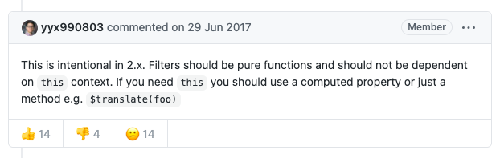

Vue filters 中 this 为 undefined，建议使用传参或 method 处理
这篇文章发布于 2021/05/04，归类于 Vue
标签：
vue filters this，vue filter this 为空，vue filter 不能使用 this
在 i18n 国际化，将 code 转换为国际化文本的场景中，需要使用 this.$i18n 这个变量，但发现 fitlers 中的 this 是 undefined，无法使用，查了下。
这个是 Vue 设计问题，以下是作者 尤雨溪 在 issue this undefined in filters · Issue #5998 · vuejs/vue 下的回复：

This is intentional in 2.x. Filters should be pure functions and should not be dependent on this context. If you need this you should use a computed property or just a method e.g. $translate(foo)
在 2.x 的版本中这个处理是有意的，Fitlers 应该是纯函数，不应该依赖 this 上下文。如果需要依赖 this，那就应该使用 computed 计算属性或 method 方法
解决方法：在 filters 中我们是可以传参数的，我们可以把需要的值，通过参数传入。如果涉及到多个变量的使用，传参比较冗余，那就使用计算属性或方法，使用示例：
// {{ currencyCode | currencyText($i18n) }}
filters: {
currencyText: function(code, i18n) {
// filter 中不能使用 this，需要传参数 this.$i18n
// console.log(this); // undefined
let { currencys, currencyCodes } = i18n.messages[i18n.locale].base;
// 根据 code 找到对应的 index
let index = currencyCodes.indexOf(code);
return currencys[index];
}
},